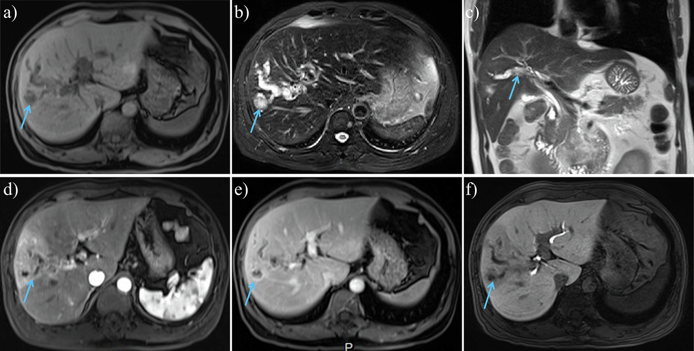
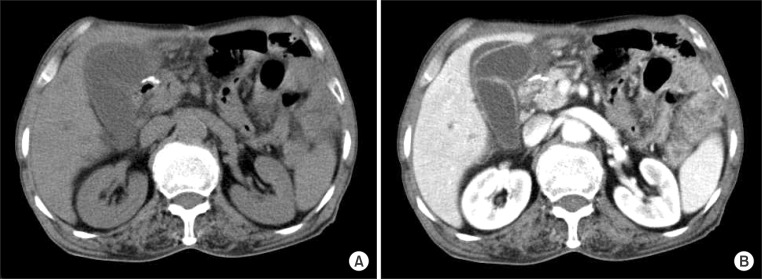
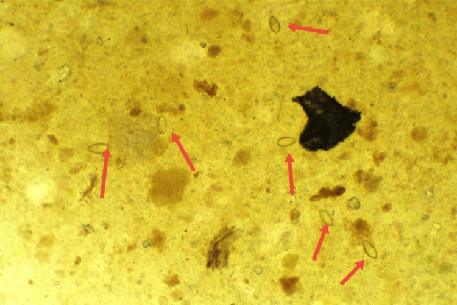
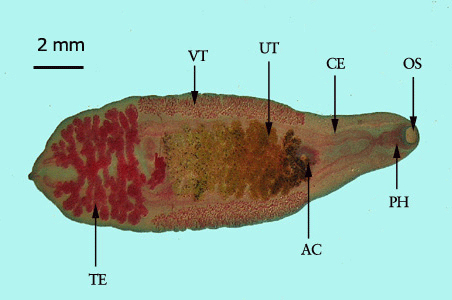

128 — Ký sinh trùng đường mật (sán lá gan nhỏ) & giãn đường mật ngoại vi / Clonorchiasis & opisthorchiasis
Tags: pattern:gian-duong-mat pattern:khuyet-long-ong vung:duong-mat-trong-gan protocol:MRCP protocol:US incidentaloma:gian-duong-mat
Mức chắc chắn (certainty): tổng hợp y văn (literature synthesis) — nhóm tự biên từ y văn mở (CC BY, CC BY-NC), có 3 ca nguyên văn (verbatim case) ghi rõ tuổi/bối cảnh trong chú thích ảnh; số liệu lấy nguyên từ bài gốc kèm PMCID tại chỗ.
Câu chốt: giãn đường mật trong gan ngoại vi mà không có tắc nghẽn đường mật ngoài gan, kèm khuyết lòng ống nhỏ, không bóng cản = nghĩ sán lá gan nhỏ ở người từng ăn cá nước ngọt sống. Bệnh cảnh này không phải "giãn đường mật do sỏi" và cũng không loại trừ ung thư đường mật — sán làm tăng nguy cơ cholangiocarcinoma (OR 4,8).
1. Tổng quan bệnh học – cơ chế hình ảnh
1.1 Tác nhân và đường lây
- Sán lá gan nhỏ (small liver flukes): Clonorchis sinensis, Opisthorchis viverrini, O. felineus (họ Opisthorchiidae). Người nhiễm do ăn cá nước ngọt sống hoặc chưa nấu chín (gỏi cá, cá muối, cá khô ướp) hoặc tôm nước ngọt chứa ấu trùng nang (metacercaria).
- Chu trình: trứng theo phân → ốc nước ngọt (vật chủ thứ nhất) → cá chép (vật chủ thứ hai) → người/động vật ăn cá. Trong tá tràng, ấu trùng thoát nang, ngược dòng ống mật chủ vào đường mật trong gan ngoại vi và trưởng thành.
- Quy mô: khoảng 15 triệu người nhiễm toàn cầu theo tổng quan hình ảnh 2026 (PMC13652791); vùng Greater Mekong ước 15–18 triệu ca (PMC11077858). Tại Việt Nam, gộp các nghiên cứu trong GMS cho tỷ lệ nhiễm C. sinensis 20,30% (KTC 95%: 9,13–31,47%) — vùng lưu hành chính là Bắc Bộ (PMC11077858).
- Yếu tố nguy cơ: thói quen ăn gỏi cá/cá nướng chưa chín, vùng có ao chuôm/ốc–cá nước ngọt, nghề đánh bắt cá, vệ sinh phân bón tươi.
1.2 TẠI SAO lại giãn đường mật ngoại vi (cơ chế hình ảnh)
- Cơ học: sán trưởng thành dài 10–25 mm, rộng 3–5 mm, bám vào thành ống mật nhỏ ở ngoại vi bằng hai giác bám (sucker). Số lượng lớn + dịch tiết (excretory–secretory products) gây viêm thành ống, phù nề, tăng sinh biểu mô tuyến và xơ hóa quanh ống (periductal fibrosis) → ống mật giãn không đều, hình ống/chùm nho nhỏ ở ngoại vi, trong khi ống mật chủ thường không giãn hoặc chỉ giãn nhẹ.
- Vì sao ngoại vi là chỗ giãn rõ nhất: lòng ống nhỏ, thành mỏng, ít mô đệm → chỉ cần phù nề + co kéo xơ là thấy giãn; ở ống lớn, thành dày và áp lực mật thấp hơn nên ít thay đổi.
- Trên siêu âm (US): mật là dịch trống âm (anechoic); thành ống viêm tăng hồi âm (hyperechoic) dày → hình "nhiều ống nhỏ" (too many tubes) chạy ra ngoại vi, không có bóng cản (acoustic shadowing) như sỏi.
- Trên CT: dịch mật 0–20 HU; sán trong lòng ống đồng đậm độ với dịch hoặc khuyết nhẹ, không cản quang, không vôi hóa. Thành ống viêm ngấm thuốc thì tĩnh mạch cửa. Không thấy khối hay hẹp đột ngột gây giãn ngược dòng.
- Trên MRI/MRCP: mật tăng tín hiệu rất mạnh trên T2; sán là khuyết tín hiệu (filling defect) hình sợi/dải nhỏ trong lòng ống giãn, không ngấm thuốc ở mọi thì; thành ống dày, ngấm thuốc đồng nhất (PMC13652791, Fig 5). Đây là dấu hiệu chốt vì MRI phân biệt được khuyết lòng ống do sán với sỏi (sỏi thường tối cả trên T1, có viền tăng tín hiệu) và với u nhú (ngấm thuốc).
- Ngưỡng định lượng giãn ống mật trong gan: ở người < 60 tuổi**, gọi là giãn khi đường kính ống **> 2 mm hoặc > 40% đường kính tĩnh mạch cửa liền kề; người lớn tuổi có thể rộng sinh lý thêm 0,3–0,7 mm mỗi thập kỷ (PMC13652791).
1.3 Tại sao sán gây ung thư đường mật (cholangiocarcinoma – CCA)
- Viêm mạn + xơ hóa quanh ống + tăng sinh biểu mô (adenomatous hyperplasia) → tổn thương DNA do gốc oxy hóa (ROS), NO, acid mật và dịch tiết ký sinh trùng kích thích tăng sinh tế bào.
- IARC xếp O. viverrini nhóm 1 từ 1994 và C. sinensis nhóm 1 từ 2009.
- Nguy cơ: OR cho CCA 4,5 (KTC 95%: 2,6–7,7) đến 6,1 (4,4–8,6) với C. sinensis; 4,4 (1,0–18,6) với O. viverrini; gộp cả hai 4,8 (2,8–8,4) (PMC13220244). Tỷ lệ CCA quy cho nhiễm C. sinensis ước 25/100.000 ở nữ và 35/100.000 ở nam mỗi năm.
2. Mẫu hình + chẩn đoán phân biệt theo vị trí (gamut)
Mẫu hình chính (pattern): giãn lan tỏa hoặc khu trú các ống mật nhỏ ở ngoại vi, không có điểm tắc (no transition point), thành ống dày nhẹ, khuyết lòng ống nhỏ; ống mật chủ bình thường hoặc giãn nhẹ.
Gamut theo cơ chế:
- Do ký sinh trùng (bài này): Clonorchis/Opisthorchis (giãn ngoại vi + khuyết lòng ống dạng sợi, vùng dịch tễ, tăng eosinophil); sán lá gan lớn (Fasciola) thường áp-xe/đường hầm trong gan hơn là giãn ống mật đơn thuần; nang sán (hydatid) là nang, không phải giãn ống (bài 139).
- Do sỏi/bùn: sỏi trong gan (hepatolithiasis) — sỏi cản quang/tối trên MRI, có bóng cản trên US, thường kèm hẹp ống và teo phân thùy (bài 138).
- Do viêm/xơ: viêm đường mật xơ hóa nguyên phát (PSC) — hẹp và giãn dạng chuỗi hạt (beaded) hoặc "cây bị tỉa" (pruned tree), ưu thế ống lớn và trung gian, kèm bệnh viêm ruột; viêm đường mật xơ hóa thứ phát (sau thiếu máu, sau xạ, thuốc).
- Bẩm sinh: bệnh Caroli — giãn dạng nang thông với cây mật, có thể thấy dấu "trung tâm chấm" (central dot sign) do nhánh tĩnh mạch cửa trong nang; kèm xơ gan bẩm sinh/thận đa nang (bài 166).
- Tân sinh: IPNB (u nhú trong lòng ống, ngấm thuốc, giãn ống phía sau) (bài 129); iCCA thể quanh ống (periductal-infiltrating) — hẹp không đều, dày thành bất quy tắc, có khối mô mềm; HCC xâm lấn đường mật (BDTT).
- Mnemonic "FLUKE" cho giãn đường mật ngoại vi không tắc: Fluke (sán), Lithiasis (sỏi trong gan), Unknown cholangiopathy/PSC, Karoli (Caroli), Epithelium neoplastic (IPNB/CCA).
3. Bảng so sánh phân biệt (ma trận đối chiếu)
| Thực thể (entity) | Hình ảnh điển hình (US/CT/MRI) | Chốt vào (rule-in) | Chốt loại (rule-out) | Gợi ý xác nhận |
|---|---|---|---|---|
| Sán lá gan nhỏ (clonorchiasis/opisthorchiasis) | Giãn ống mật ngoại vi lan tỏa/khu trú; thành ống dày ngấm thuốc; khuyết lòng ống dạng sợi, không ngấm thuốc trên T2/MRCP; không sỏi | Vùng dịch tễ + ăn cá sống + eosinophil tăng + khuyết lòng ống di động/không bóng cản | Có sỏi cản quang/bóng cản, hẹp đột ngột, khối mô mềm ngấm thuốc → không phải sán đơn thuần | Kato–Katz 3 mẫu phân; ELISA/kháng thể; cholangioscopy thấy sán |
| Sỏi trong gan (hepatolithiasis) | Sỏi tăng đậm độ trên CT, bóng cản trên US, tối trên T2; ống mật giãn kèm teo nhu mô phân thùy | Sỏi cản quang/tối trong lòng ống + teo phân thùy + hẹp ống | Khuyết lòng ống mềm, dạng sợi, không bóng cản, không cản quang → nghĩ sán | CT không cản quang + MRCP; ERCP/PTBD lấy sỏi |
| PSC | Hẹp–giãn dạng chuỗi hạt, "cây bị tỉa", ưu thế ống lớn/trung gian, thành ống dày | Nhiều hẹp ngắn xen kẽ + bệnh viêm ruột + p-ANCA | Giãn chỉ ở ngoại vi, không hẹp chuỗi hạt, khuyết lòng ống dạng sợi → nghĩ sán | MRCP; ERCP lấy mật tế bào; loại trừ nguyên nhân thứ phát |
| Bệnh Caroli | Giãn dạng nang thông với cây mật; central dot sign; có thể sỏi trong nang | Nang thông với ống mật + central dot + thận đa nang/xơ gan | Giãn hình ống đều, không dạng nang, không central dot → không Caroli | MRCP; CT; gen PKHD1 nếu cần |
| IPNB | Khối nhú trong lòng ống ngấm thuốc, giãn ống phía sau, có thể tiết nhầy | Khối trong lòng ống ngấm thuốc + giãn ống không tương xứng | Khuyết lòng ống không ngấm thuốc, dạng sợi mảnh → nghĩ sán/bùn | MRCP + cholangioscopy + sinh thiết |
| iCCA thể quanh ống | Hẹp không đều + dày thành bất quy tắc + khối mô mềm, giãn ống phía trên; ngấm thuốc thì muộn | Khối/hẹp bất quy tắc + ngấm thuốc + CA 19-9 tăng | Thành ống dày đồng nhất, mỏng, không khối → nghĩ viêm/sán | CT đa thì, MRI gadoxetic, sinh thiết |
Đọc ma trận theo 3 câu hỏi: (1) giãn ngoại vi hay cả ống lớn? (2) có điểm tắc/khối không? (3) khuyết lòng ống có ngấm thuốc hay không? Sán = ngoại vi + không tắc + không ngấm thuốc.
4. Protocol chụp + hệ phân độ/điểm chuẩn hóa
4.1 Protocol
- Siêu âm (first-line): nhịn ăn ≥ 6 giờ; đầu dò convex 3,5–5 MHz cho gan, linear 7–12 MHz cho ống mật ngoại vi sát bao gan; đo đường kính ống mật trong gan, ghi vị trí ngoại vi, tìm bóng cản, khuyết lòng ống, dày thành, dịch quanh túi mật.
- CT bụng: không cản quang + thì tĩnh mạch cửa (lát 1–3 mm); cần thì thêm thì động mạch muộn để đánh giá khối/ngấm thuốc thành ống. Không dùng CT để "tìm sán" — CT để loại trừ sỏi cản quang, khối, biến chứng.
- MRI/MRCP (chốt): T2 lát mỏng 3 mm, MRCP 3D, DWI, và T1 sau tiêm + thì gan–mật (gadoxetic acid) nếu nghi CCA. Đánh giá: mức giãn, khuyết lòng ống, dày/ngấm thuốc thành ống, khối, hạch.
- Nội soi ống mật (cholangioscopy – SpyGlass): khi cần nhìn trực tiếp sán hoặc phân biệt u/bùn; ca 2026 ghi nhận thấy sán sống di động trong lòng ống mật (PMC13040101) — bằng chứng trực tiếp, tránh sinh thiết mù.
- Xét nghiệm kèm: công thức máu (eosinophil), Kato–Katz 3 mẫu phân (độ nhạy tăng khi lặp mẫu), ELISA/ICT kháng thể (độ đặc hiệu thấp, không phân biệt nhiễm cũ/mới), CA 19-9 khi nghi CCA.
4.2 Điều trị và theo dõi (ngưỡng lấy từ nguồn)
- Praziquantel (thuốc chọn): 25 mg/kg × 3 lần/ngày × 2–3 ngày (WHO); 40 mg/kg liều đơn tiện hơn nhưng tỷ lệ thất bại cao hơn. Albendazole thay thế: 10 mg/kg/ngày × 7 ngày hoặc 8 mg/kg × 2 lần/ngày × 5 ngày (PMC13220244).
- Kiểm soát nguồn: điều trị cả gia đình/người cùng ăn, tẩy giun định kỳ ở vùng lưu hành, không ăn cá nước ngọt sống.
- Theo dõi sau điều trị: chụp lại MRI/US sau 3–6 tháng (khoảng cách tối ưu chưa có đồng thuận — ghi rõ "chưa rõ"): giãn ống và dày thành giảm sau praziquantel là bằng chứng đáp ứng (PMC13652791); nếu giãn tăng, xuất hiện khối/hẹp → tầm soát CCA (MRCP + CA 19-9 + sinh thiết/cholangioscopy).
- Tầm soát CCA ở người nhiễm mạn vùng lưu hành: siêu âm ± CA 19-9 định kỳ; khoảng cách tối ưu chưa có đồng thuận — không bịa con số.
flowchart TD
A["Giãn đường mật trong gan ngoại vi"] --> B{"Có tắc nghẽn ống mật chủ?"}
B -->|"Có"| C["Tìm sỏi, u, hẹp — MRCP/CT"]
B -->|"Không"| D{"Khuyết lòng ống nhỏ?"}
D -->|"Có, không ngấm thuốc"| E["Nghĩ sán lá gan nhỏ"]
D -->|"Không"| F{"Giãn dạng nang?"}
F -->|"Có"| G["Caroli — central dot"]
F -->|"Không"| H["PSC, sỏi trong gan, IPNB, CCA"]
E --> I["Kato-Katz 3 mẫu, eosinophil, ELISA"]
I --> J["Praziquantel 25 mg/kg x 3/ngày x 2-3 ngày"]
J --> K["MRI lại sau 3-6 tháng"]
K -->|"Giảm giãn"| L["Đáp ứng"]
K -->|"Không giảm hoặc có khối"| M["Tầm soát CCA: MRCP, CA 19-9, sinh thiết"]
5. Biến thể bình thường và cạm bẫy
- Giãn sinh lý theo tuổi: ống mật trong gan có thể rộng dần 0,3–0,7 mm/thập kỷ, không kèm dày thành hay ứ mật → đừng gọi là bệnh nếu không có khuyết lòng ống/eosinophil/triệu chứng.
- Sau cắt túi mật: ống mật chủ có thể giãn nhẹ bù trừ; nhưng giãn ống trong gan ngoại vi mới vẫn phải giải thích (sán, sỏi, hẹp).
- Khí trong đường mật sau ERCP/cắt cơ vòng Oddi: khí HU rất thấp (−1000 đến −500), nổi phía trước (non-dependent), có thể thấy cả trong túi mật — không phải sán, không phải áp-xe; so phim trước và hỏi tiền sử thủ thuật.
- Sán vs sỏi non-calcified: sỏi cholesterol không cản quang trên CT và có thể không bóng cản trên US → chuyển sang MRI: sỏi tối trên T2, sán khuyết tối mảnh, dạng sợi, có thể di động; cholangioscopy là chốt.
- Sán vs IPNB: u nhú ngấm thuốc, có cuống/chồi, giãn ống không tương xứng; sán không ngấm thuốc. Đừng chỉ dừng ở "có sán" — u có thể nằm cùng chỗ.
- Cạm bẫy "thỏa mãn tìm kiếm" (satisfaction of search): thấy sán không loại trừ CCA đồng thời; luôn đo CA 19-9, tìm khối/hẹp, và theo dõi hình ảnh sau điều trị.
- Eosinophil bình thường không loại trừ: nhiễm nhẹ/mạn có thể không tăng eosinophil; hỏi kỹ thói quen ăn gỏi cá và làm 3 mẫu phân.
6. Tự lượng giá — Blind Quiz
Ca 1 — Nam 56 tuổi, đau hạ sườn phải mơ hồ, không sốt. MRI gan (T1, T2, MRCP, động mạch, tĩnh mạch cửa, thì gan–mật):

- Gợi ý: không có tiền sử sỏi; sống ở vùng có ao cá.
- Hỏi: (1) Giãn ở đâu, có tắc nghẽn không? (2) Khuyết lòng ống có ngấm thuốc không? (3) 3 chẩn đoán phân biệt và xét nghiệm chốt?
Bấm để hiện đáp án (findings + chẩn đoán)
- Dấu hiệu: giãn khu trú đường mật trong gan thùy phải (a: T1 giảm tín hiệu; b–c: T2 tăng tín hiệu, khuyết tín hiệu dạng sợi trong lòng ống — mũi tên xanh); thành ống dày, ngấm thuốc đồng nhất thì tĩnh mạch cửa (e); các khuyết lòng ống không ngấm thuốc ở mọi thì (d–f). Không có khối, không hẹp đột ngột, không sỏi.
- Chẩn đoán: clonorchiasis (sán lá gan nhỏ) — khuyết lòng ống là sán trưởng thành, không ngấm thuốc; giãn ngoại vi do viêm/xơ quanh ống.
- Vì sao: mật T2 rất sáng; sán là mô mềm nhỏ không có mạch máu nên không ngấm thuốc, khác u nhú/IPNB.
- Xác nhận: Kato–Katz 3 mẫu phân, eosinophil, ELISA; điều trị praziquantel 25 mg/kg × 3/ngày × 2–3 ngày, MRI lại sau 3–6 tháng.
- Nguồn ảnh: Insights into Imaging 2026 (PMC13652791), Fig 5, CC BY 4.0.
Ca 2 — Nam 68 tuổi, sốt + đau hạ sườn phải 2 ngày, sống gần sông; CT bụng có/không cản quang:

- Hỏi: dấu hiệu chính? Có giãn đường mật không? Chẩn đoán và yếu tố nguy cơ ẩn?
Bấm để hiện đáp án
- Dấu hiệu: túi mật căng to, thành dày, ngấm thuốc, dịch quanh túi mật (pericholecystic fluid); giãn nhẹ đường mật trong gan ngoại vi không có sỏi cản quang.
- Chẩn đoán: viêm túi mật cấp nguyên phát do C. sinensis (hiếm) — sán trong túi mật/ống túi mật gây viêm; ca gốc mô tả sán lấy ra từ ống túi mật và túi mật.
- Vì sao: viêm thành túi mật + dịch quanh túi mật là dấu hiệu viêm cấp; giãn ngoại vi nhẹ là manh mối ký sinh trùng.
- Xử trí: cắt túi mật nội soi + praziquantel; tìm sỏi/sán trong ống mật chủ trước mổ bằng MRCP nếu nghi.
- Nguồn ảnh: Annals of Surgical Treatment and Research 2014 (PMC4127904), Fig 1, CC BY-NC 3.0.
Ca 3 — Nam 29 tuổi, men gan bất thường 3 năm, không rõ nguyên nhân; soi phân tươi:

- Hỏi: hình dạng, kích thước trứng? Vì sao men gan kéo dài? Cần làm gì tiếp?
Bấm để hiện đáp án
- Dấu hiệu: trứng hình hạt vừng (sesame seed), 26–32 × 15–17 µm, một đầu có nắp (operculum) và vai (shoulder/acromion); vỏ mỏng, bên trong có ấu trùng.
- Chẩn đoán: clonorchiasis — trứng trong phân xác nhận nhiễm; men gan kéo dài do viêm đường mật mạn.
- Vì sao: trứng nhỏ, vỏ mỏng, nắp rõ — đặc trưng Opisthorchiidae; phân biệt với trứng Fasciola (lớn hơn, ~130–150 µm) và sỏi mật (không có cấu trúc sinh học).
- Xử trí: praziquantel theo cân nặng; kiểm tra lại phân sau điều trị; siêu âm/MRCP tầm soát giãn ống mật và CCA.
- Nguồn ảnh: Cureus 2024 (PMC11108091), Fig 1, CC BY 4.0.
Ảnh minh họa thêm — sán trưởng thành (hình thái):

Sán trưởng thành: thân dẹt, dài 10–25 mm, hai giác bám. Nguồn: DPDx–CDC, public domain (Wikimedia Commons).Bài liên quan chéo
- 100 – Tổng quan hệ Bụng
- 131 – Tắc mật
- 138 – Sỏi trong gan & viêm đường mật mủ tái phát
- 139 – Sán lá gan (nang sán)
- 129 – IPNB & u nhầy đường mật
- 137 – Theo dõi stent/dẫn lưu đường mật
Ảnh
128_ks-trung-duong-mat_MRI_InsightsImaging2026-Fig5.png— MRI 6 thì, ca 56 tuổi, CC BY 4.0 (PMC13652791).128_ks-trung-duong-mat_CT_AnnSurgTreatRes2014-Fig1.jpg— CT không cản quang/có cản quang, ca 68 tuổi, CC BY-NC 3.0 (PMC4127904).128_ks-trung-duong-mat_Egg_Cureus2024-Fig1.jpg— soi phân ×100, ca 29 tuổi, CC BY 4.0 (PMC11108091).128_ks-trung-duong-mat_Adult-worm_CDC-DPDx.jpg— DPDx–CDC, public domain.- Chi tiết giấy phép từng ảnh:
images/CREDITS.md.
Không dùng để chẩn đoán độc lập khi chưa có người hướng dẫn.